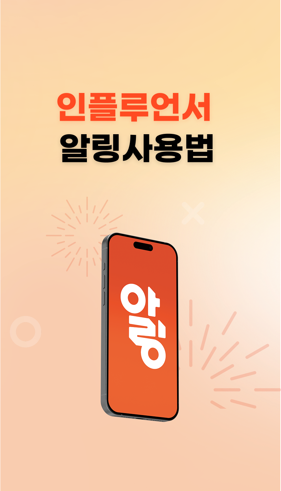
알링은 처음이라 당황스럽죠?
가이드를 따라 차근차근 거래를 진행해주세요.
아래의 목차를 누르면 바로 이동가능합니다.
매뉴얼 목차
1. 프로필 편집
2. 포트폴리오 수정
3. 소개글 작성/알림 메모
4. 채널 추가
5. 포트폴리오 업로드
6. 상품 등록
7. 활동가능 일시설정
8. 프로젝트 진행 및 완료
9. 정산 요청
10. 알림 설정
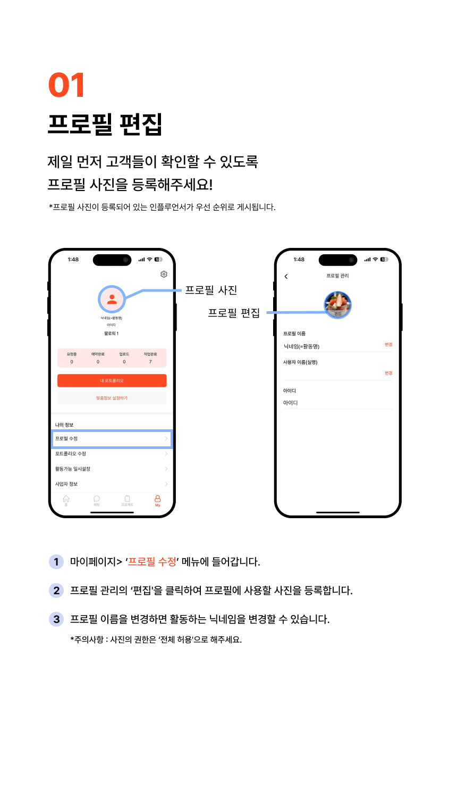
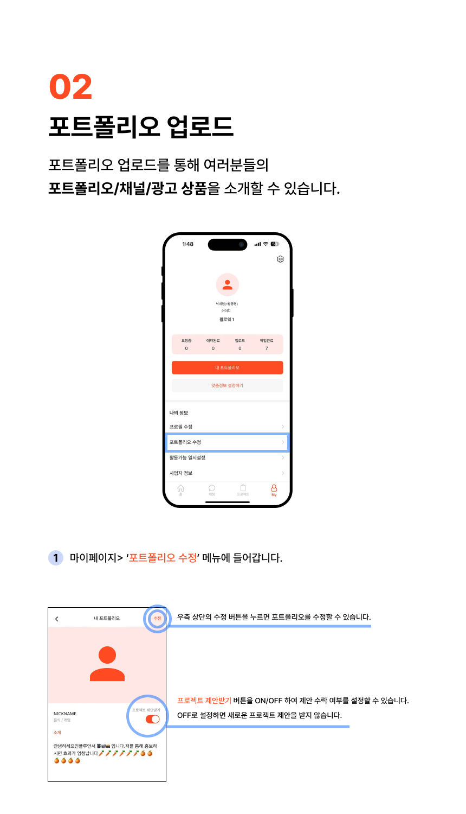
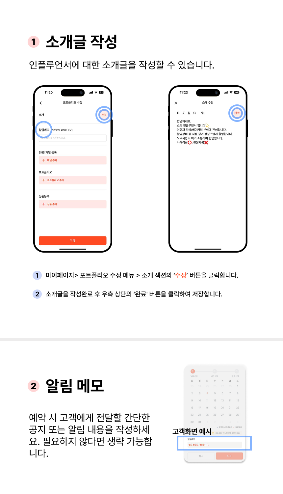
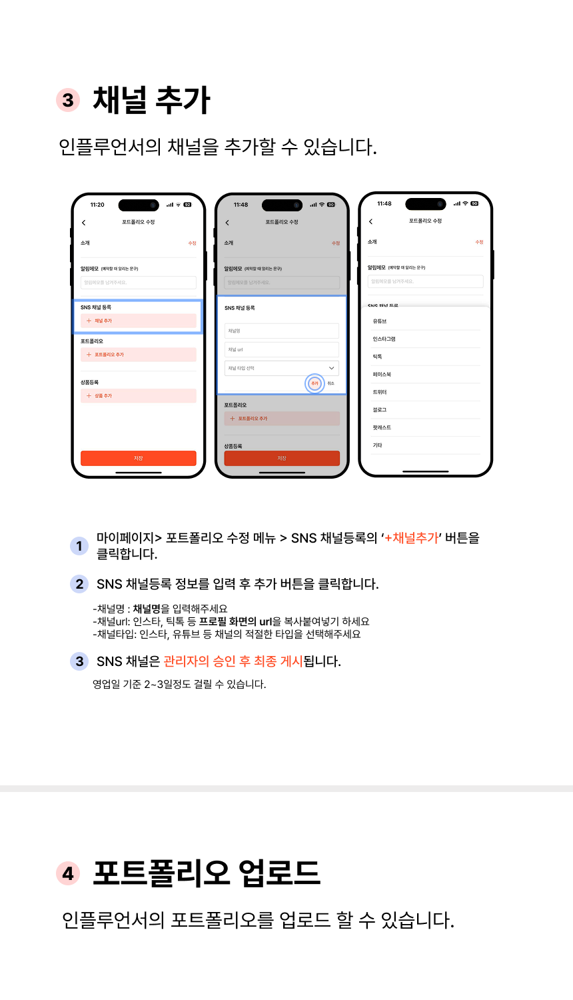
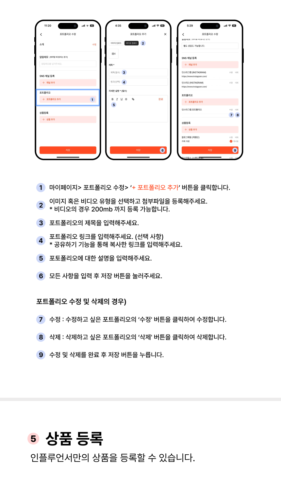
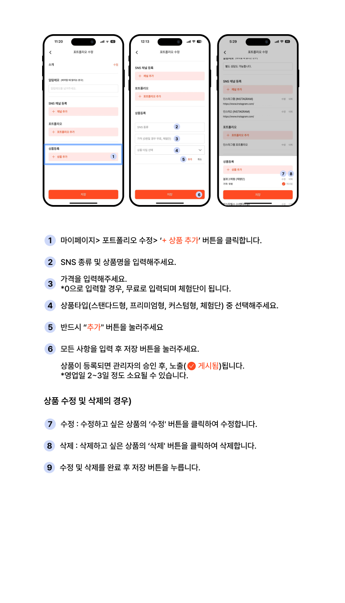
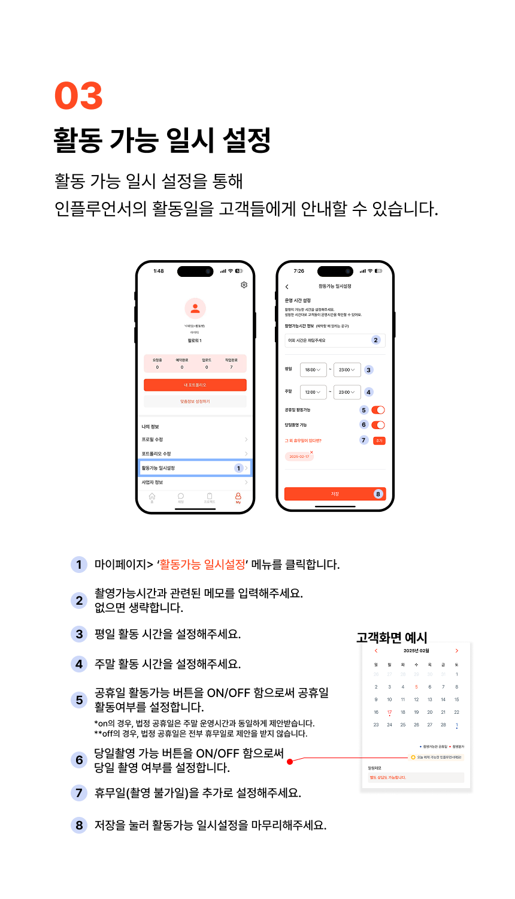
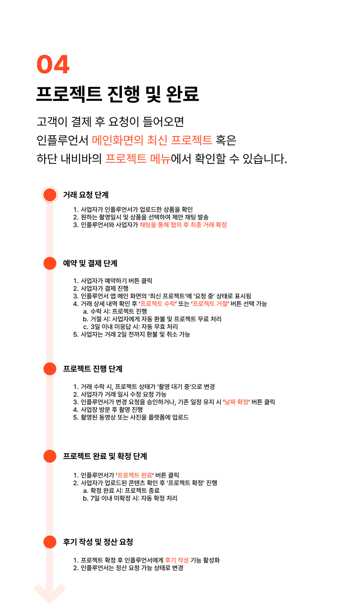
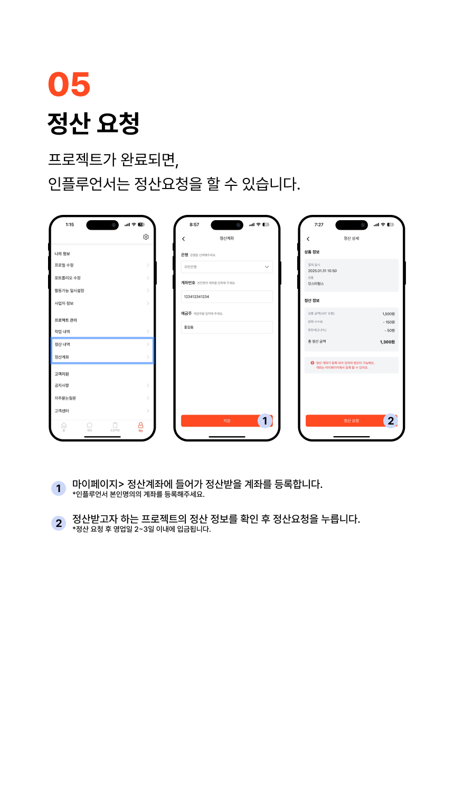
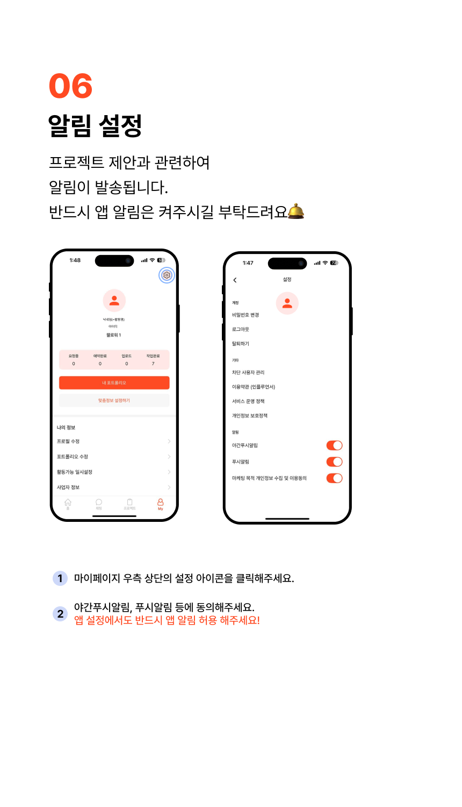
앱 업데이트